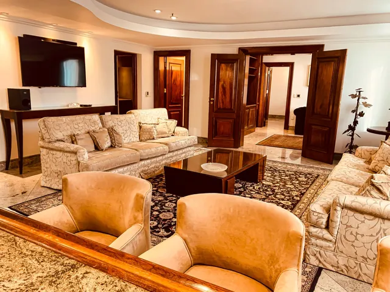
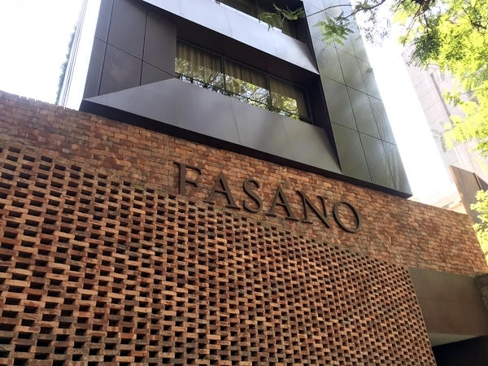
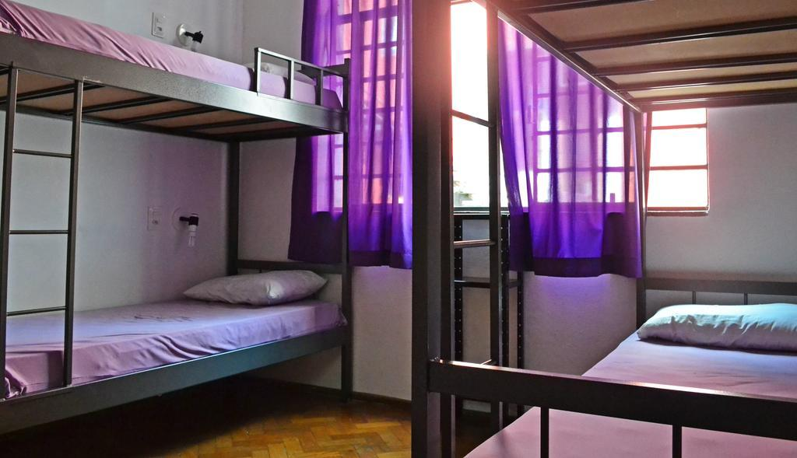

Bem-vindo a EuroTour
Ouro Minas Palace Hotel
Ouro Minas Palace Hotel: Situado no coração da cidade, este hotel cinco estrelas oferece uma experiência de hospedagem incomparável. Com quartos elegantemente decorados, instalações de classe mundial e um serviço excepcional, o Ouro Minas Palace Hotel é um refúgio de conforto e estilo para viajantes exigentes.
Hotel Fasano
Com um design elegante e contemporâneo, o Hotel Fasano combina o glamour atemporal com o melhor em serviço personalizado, garantindo uma estadia memorável para cada visitante. Possui tratamentos exclusivos no spa de classe mundial do Hotel Fasano, onde terapeutas especializados oferecem uma variedade de massagens e terapias para revitalizar o corpo e a mente. Além disso, as instalações de bem-estar, como piscinas e academias, proporcionam momentos de relaxamento e revitalização.
Hostel Rock and Hostel
Descubra a energia vibrante e o espírito jovem do Rock and Hostel, uma opção de hospedagem única em Belo Horizonte, perfeita para viajantes que buscam uma experiência autêntica e descontraída.Com dormitórios compartilhados e quartos privativos, o hostel oferece opções de acomodação para todos os tipos de viajantes. Os espaços são confortáveis, limpos e bem equipados, garantindo uma estadia agradável e conveniente.
